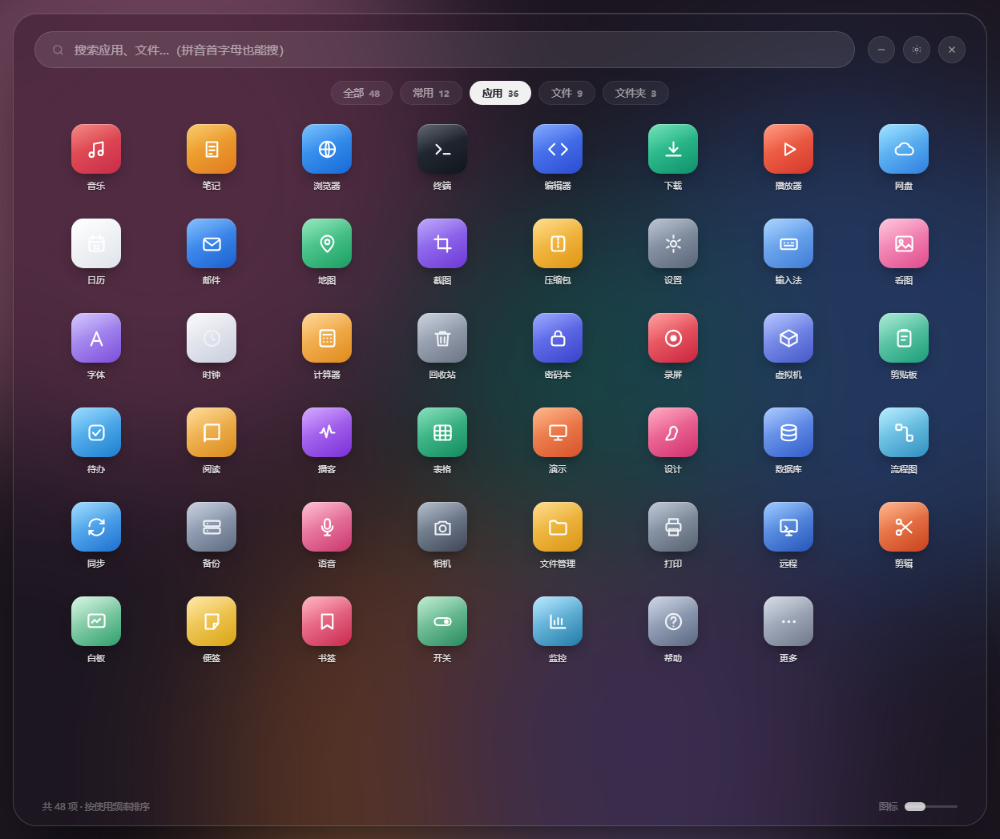
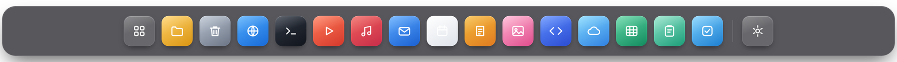
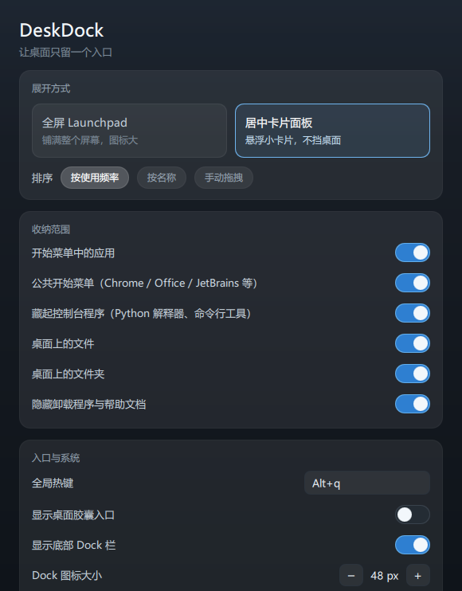

03 / 桌面与系统
让桌面
只留一个入口。
把桌面和开始菜单里的应用收进一条常驻底部的 Dock， 桌面上一个图标都不留——而文件，一个都没动。 Alt+Q 唤出毛玻璃面板，拼音缩写直达任何应用。
版本v1.2.1
平台Windows
体积55 MB
安装绿色版，双击即用
网络零请求
更新日志
v1.2.1修复网格面板里应用点不开、已在后台运行的应用点不开。
v1.2.0Dock 归你管：自己挑、能沉底、点了有回音。
v1.1.0底部 Dock 栏接管入口。
v1.0.1修复崩溃后的图标恢复。
v1.0.0首个可用版本。
首次运行如提示“未知发布者”，点 更多信息 → 仍要运行。绿色版，下载即用。


全屏 Launchpad / 毛玻璃
底部 Dock 栏 / 常驻
01
底部 Dock
最常用的应用躺在屏幕底部，点一下就走，不用先唤起面板。
02
Alt+Q 面板
毛玻璃全屏面板，搜索、分类、排序，Esc 即收。
03
拼音直达
输 wx 找微信，vsc 找 VS Code——首字母缩写也能搜到。
04
装完自动出现
59 个源目录在监听，装了新软件不用手动刷新。
/PROMISES
先说清楚它不做什么。
这是整个设计的前提，也是它和“桌面整理工具”最大的区别。
/ 01
不移动、不复制、不删除任何文件
桌面图标只是“不再由 Explorer 绘制”，文件完整留在原目录。任何把快捷方式搬进某个文件夹的方案都不采纳。
/ 02
一切可逆
程序崩了、退出了，随时能恢复系统桌面图标——崩溃钩子、下次登录兜底、启动自检，三层保险，托盘里还有手动开关。
/ 03
只读扫描 + 图标缓存
不做写操作，不碰用户数据。实测 155 条快捷方式去重后 145 条，图标命中 145/145。

设置 / 收纳范围与热键都可调
居中卡片面板还是全屏 Launchpad，排序按使用频率还是按名称，收纳不收纳公共开始菜单、
要不要藏命令行程序——都在设置里。Dock 图标大小，一个滑块解决。
实测冷启动 1.0–1.3 秒，唤出延迟 72–115 毫秒，快到不像是个 Python 程序。